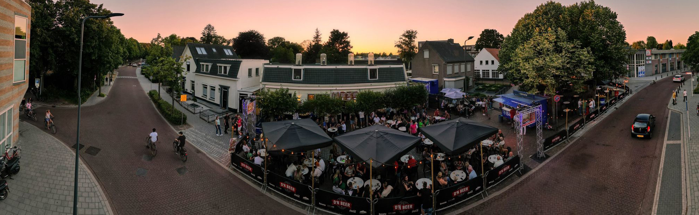
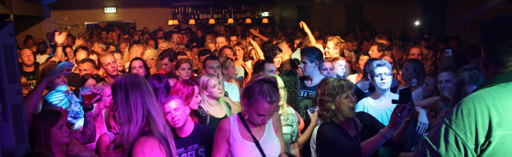
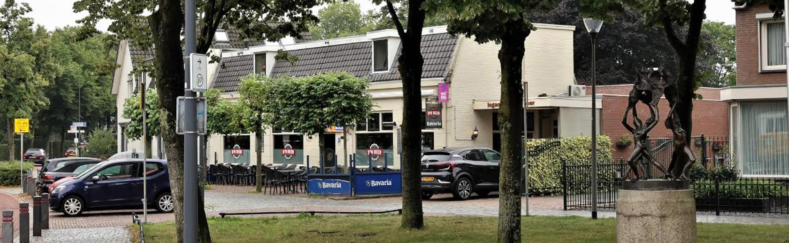

27 maart 2027
EXIT · Live in concert, The Final Tour
Feestzaal d'n Beer. Zaal open 20:00. Kaarten à € 15.
Kaarten bestellen: vraag ernaar via info@dnbeer.nl of aan de bar.

Biercafé & Feestzaal · Dorpsstraat 77, Rosmalen
Sinds begin 1900 bepaalt ons pand het straatbeeld aan de Dorpsstraat. Voor een speciaalbiertje, een potje darts, een feest of het volgende duel van Oranje.
Ma t/m do 13:00 – 01:00
Vr en za 13:00 – 02:00
Zo 11:00 – 00:00
Feestzaal d'n Beer staat in de wijde omtrek bekend om de goed verzorgde feesten en partijen.
Een Brabantse koffietafel of een eenvoudige koffietafel met voorgesmeerde broodjes: alles is mogelijk.
Met zorg geselecteerde bieren van over heel de wereld hebben wij voor u opgenomen in ons assortiment.
Heerlijke borrelhapjes, snacks en eenvoudige lunchgerechten. Smakelijk eten!
Zo'n vijftig bieren, van een fluitje Bavaria tot een Westmalle Tripel. Het aanbod wisselt: vraag aan de bar naar de wisselbieren, de laatste specials en de actuele prijzen.
Ook op fles, onder meer:
Borrelhapjes, snacks en eenvoudige lunchgerechten.

Al decennialang is onze zaal bekend als een van de gezelligste feestzalen in Rosmalen en omgeving. De authentieke, sfeervolle uitstraling draagt bij aan een gezellig feest.
€ 39,95 per persoon · 5 uur
Een Brabantse koffietafel of een eenvoudige koffietafel met voorgesmeerde broodjes: alles is mogelijk. Al tientallen jaren bekend om de goede verzorging.
Vragen over een feest of koffietafel? Mail naar info@dnbeer.nl of bel 073 - 521 26 12.
Een enorme verscheidenheid aan verenigingen heeft haar thuishaven bij Biercafé & Feestzaal d'n Beer, of wordt door ons ondersteund.
Iedereen is welkom voor een potje darts. Op woensdag, donderdag en vrijdag regelmatig BDC-competities.
Iedere donderdag is de clubavond van Nooit Volleerd. Op andere dagen regelmatig externe competities.
Sinds de huidige eigenaren in 2011 begonnen, is d'n Beer omgedoopt tot HET Oranjecafé van Rosmalen. Elke wedstrijd van Oranje is te volgen op diverse grote schermen. Tijdens een EK of WK barst in het café en de feestzaal een waar volksfeest los, en onze vaste dj zorgt rond de wedstrijden voor de juiste muzikale noot. Met honderden voetbalfans waan je je direct in een echte stadionsfeer.
Tot en met 2017 stond tijdens carnaval achter in de feestzaal De Tent. Sinds 2018 vinden er ieder jaar verschillende evenementen plaats tijdens carnaval. Via onze socials en deze website houden we u op de hoogte.
Wat is er binnenkort te doen bij d'n Beer?
27 maart 2027
Feestzaal d'n Beer. Zaal open 20:00. Kaarten à € 15.
Kaarten bestellen: vraag ernaar via info@dnbeer.nl of aan de bar.
Dorpsstraat 77
5241 EB Rosmalen
073 - 521 26 12
Bij geen gehoor: 06 - 43 46 25 24
info@dnbeer.nl
| Maandag t/m donderdag | 13:00 – 01:00 |
|---|---|
| Vrijdag | 13:00 – 02:00 |
| Zaterdag | 13:00 – 02:00 |
| Zondag | 11:00 – 00:00 |
